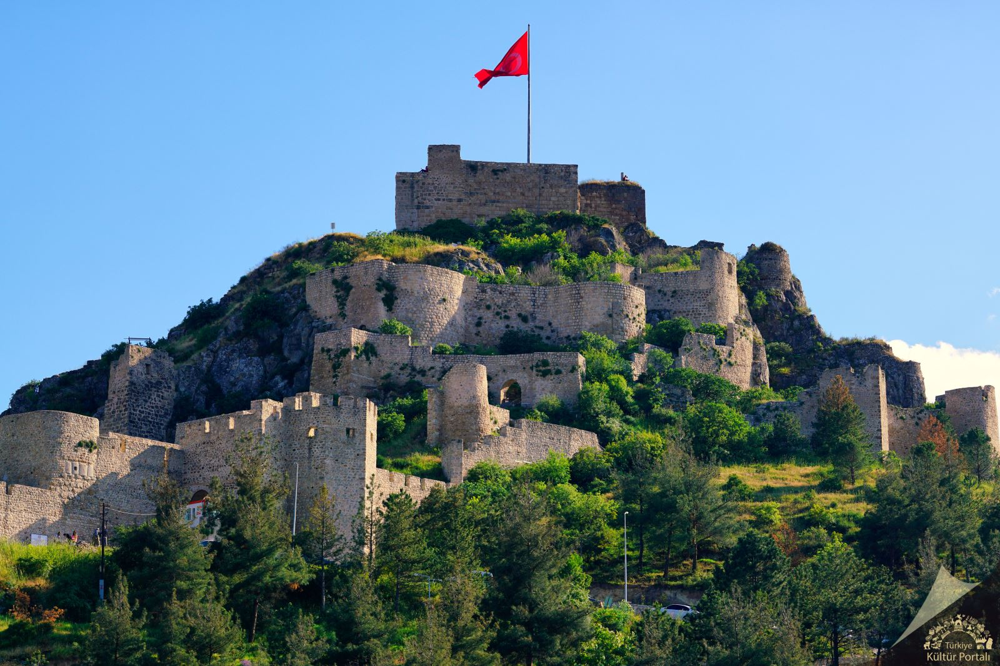

Amasya Kalesi-Amasya
Amasya Kalesi, Amasya il merkezinin kuzeyini kaplayan Harşena Dağı üzerindedir. Harşena Kalesi adıyla da bilinir. Amasya Kalesi’nin üzerinde inşa edildiği kaya denizden 700 metre Yeşilırmak’tan ise 300 metre yüksekte bulunmaktadır. Bazı tarihçilere göre kaleyi Pontus Kralı Mithridates yaptırmıştır. Bazılarına göre ise Kumandan Karsan veya Harsana yaptırdığı için kale Harşana/Harşena ismini almıştır.
Amasya Kalesi, tarihi mücadeleler içinde birçok kez el değiştirmiş ve bunların çoğunda tahrip olmuştur. Persler, Romalılar, Pontus ve Bizanslıların egemenlikleri döneminde birçok saldırıya uğrayan kale her seferinde yeniden inşa edilmiştir. Kale 1075’te Türklerin Amasya’yı fethetmesinden sonra önemli bir onarım görmüştür. 18'inci yüzyıla kadar kullanılan kale, bu yüzyıldan sonra askeri önemini kaybetmiştir.

Kalenin tepe noktası kesme, sur duvarları moloz taşlardan yapılmıştır. Yeşilırmak’ın kıyısına kadar sekiz savunma kademesine sahip olan kalede Cilanbolu adı verilen ve kalenin orta yerinde yüksekçe bir yerden kayaya oyulmuş 150 basamakla aşağıya inilen 8 metre çapında bir dehliz vardır. Kalede sarnıçlar, su depoları, Osmanlı Dönemi'ne ait hamam kalıntıları ve kayaya oyulmuş Pontus Kral Mezarları bulunmaktadır. Sur duvarlarının önemli bir kısmı ayakta kalmıştır. Kale, İçeri Şehir (Hatuniye Mahallesi), Kızlar Sarayı ve Yukarı Kale olmak üzere üç bölümden oluşur.
Yeşilırmak kıyısı boyunca, İstasyon Köprüsü ile Hükümet köprüsü arasında uzanan yaklaşık 800 metrelik bir alanı kaplayan Hatuniye Mahallesi’nde Yeşilırmak’ın kuzeyinden yükselen antik sur duvarları üzerinde Amasya Evleri, hamamlar ve camiler inşa edilmiştir. Aşağı Kale olarak da adlandırılan bu bölüme Alçak Köprü’den, İstasyon Köprüsü’nden, Sultan Bayezid Camii karşısında bulunan Madenüs Köprüsü’nden ve Hükümet Köprüsü’nden girilebilmektedir. Kızlar Sarayı demiryolu ile İçeri Şehir’den (Hatuniye Mahallesi) ayrılmıştır.